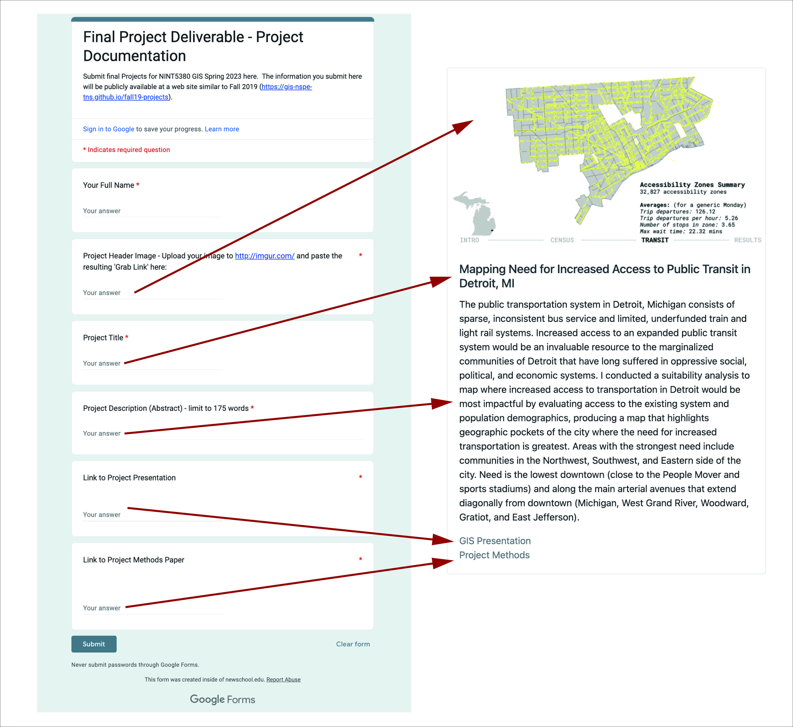

Final Project Deliverable
Spring 2025 | UENV3200 + UURB3210 | CRN: 11008 + 11009
Final Project Preparation + Upload Instructions
Part I - Schedule + Organization
Starting Week 12, Class 11, the remaining weeks of the semester will be devoted to final project development.
- The first draft final project due date: Final Project Presentation Due 6:40PM Tuesday 05/12/25
- The completed final project due date: Final Project Completed Due 11:59PM Sunday 05/18/25
Recorded Guide:
- Review the following video guide for image sequencing in QGIS for Google Slides. These same techniques can be used for Canva, Microsoft Powerpoint, ect.:

Review the Final Project Class 11 Assignment for strategies for final project design:
- Wayfinding - progress bars, numbering
- Font Hierarchy
- Page Space - Grid Formats
- Variable Map Scales
- Projection Systems
- Slide progression and spatial bookmarks
- Quantification + Summarization: Charts & Maps
Part II - Publication Methods
Final Deliverable:
The final deliverable consists of two components:
A slides format presentation loaded and linked to your Google Drive.
A methods paper document loaded and linked to your Google Drive.
The final project submission is an entry response to the Final Project Google Intake Form:
Your Full Name
Project Header Image
Project Abstract - approx. 175 words
Active Google Drive link to Project Presentation Slides
Active Google Drive link to Methods Paper
Part III - Final Project Steps + Upload Instructions
Step #1:
- Project Proposal (completed)
Step #2:
- Develop Methodology
Step #3:
- Conduct GIS analysis
Step #4:
- Complete analysis | Derive quantitative results | Summarization | Conclusive findings
Step #5A:
- Make back up of all data and analysis for future reference
- Presentation Design | Methods Paper | Publish Documents | Google Forms Intake
Step #5B - Slides:
- Finish Slides- either finalize slides in another program and import to Google Slides; or create slides from start to finish within Google Slides
Step #5C Methods:
Complete methods paper at Google Drive. Include the following subsections in the methods paper:
- Abstract
- Introduction
- Methodology & Analysis
- Results
- Conclusion
- Works Cited | Bibliography | Data Sources
Step #6 Create Active Links at Google Drive:
First, ensure that
File > Shareis set toAnyone with the link can viewfor both the Google presentation slides and the Google document for the methods paper:
Step 1 Publishing Links - Open File to viewstatusSecond, copy both links and paste them to the Google Intake form in their respective fields shown below.
Step #7 Google Form Intake:
The final deliverable is NOT complete until all required fields are complete in the Final Project Google Intake Form. Note that there are 2 link fields for sharing the presentation and the methods paper.
